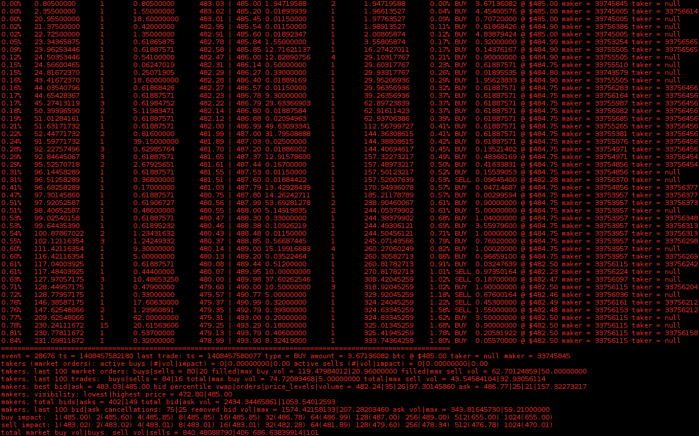

In order to begin looking into market microstructure I implemented a Limit Order Book. The (very rough) implementation has 2 modes of operation:
1) It continuously reads from a stream of buy/sell order events (new order, modify order, cancel order) to produce a diabolical ascii chart of order book depth along with time and sales. (shown in the below .gif)
2) It can re-construct an order book from archived order book events. In both cases, a log file is kept from which 225 indicators can be extracted into a csv file. The intention of this project was simply to derive this .csv file for use elsewhere, hence the mess. I intend it to be a starting point for something better.
I do not have access to order data for a conventional exchange, so this implementation is based on data obtained from Bitcoin exchanges. Specifically streaming data via a websocket from Bitstamp. New (planned) implementation will abstract this away to a higher level protocol.
Divided into 2 sections, the left hand side of the book shows the depth of BUY limit orders (bids), while the right hand side shows the depth of SELL (asks) limit orders. At the top of bid side of the book on the left is the current best bid, while the top of the ask side of the book is the current best ask. Each row is a price level, decreasing/increasing for the bid/ask side respectively.
Each level consists of 5 columns: The percentage difference from the best bid/ask (the depth), the cumulative sum of volume/liquidity up until and including the price level, the number of orders enqueued at this price level, the amount of volume/liquidity available at this individual price level, and finally, the actual price of this this level.
For example, on the bid side, an entry of: 0.42%, 157.40063272, 1, 59.68000000, 656.26, indicates that this price level is 0.42% less than the current best bid, 157.4 units of volume would need to be sold before this level is reached, there is 1 order at this level (to buy 59.68 units) @ 656.26 dollars.
Trades are shown on the right hand side, in the third column. The purpose of this implementation is to reconstruct/infer trades given a stream of bid/ask limit order events.
These trades are the result of this inference: showing the trade direction (BUY = a buy market order hit an ask limit order) (SELL = a sell market order hit a bid limit order). The implementation can sometimes match makers to takers: A maker is an order to buy/sell placed at a price limit _in_ the order book - i.e., the trader is providing liquidity, whereas a taker is an order to buy/sell that will not be placed in the order book (it will consume maker orders until it is filled) - the trader is said to be removing liquidity. As such they pay the price: the market spread + the Volume Weighted Average Price for the market impact.
As mentioned, the code is _very_ rough. However for anyone interested (it is useful for monitoring the bitstamp order book in real time), the code + a detailed description of the derived indicators is available here.